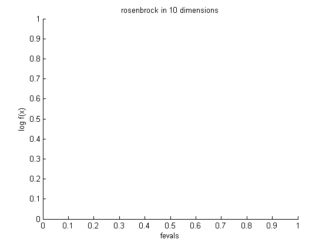
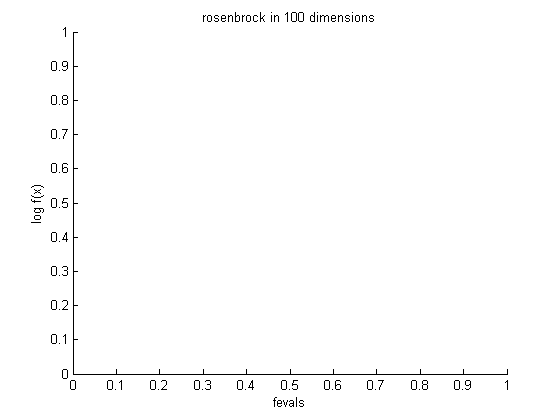
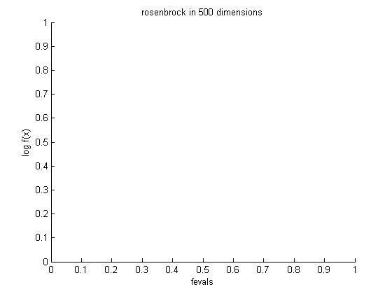
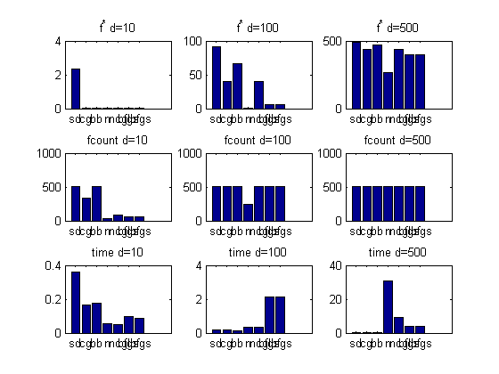

Optimization in high dimensions using minFunc
PMTKslow
function demoMinfuncHighdim() %methods = {'sd', 'cg', 'bb'}; methods = {'sd', 'cg', 'bb', 'newton', 'newtoncg', 'bfgs', 'lbfgs'}; %methods = {'sd', 'cg', 'bb', 'newton', 'newtoncg', 'bfgs', 'lbfgs', 'newton0', 'newton0lbfgs'}; [styles] = plotColors(); for i=1:length(methods) names{i} = methods{i}(1:min(5,length(methods{i}))) end names = {'sd', 'cg', 'bb', 'n', 'ncg', 'bfgs', 'lbfgs'}; seed = 1; setSeed(seed); dims = [10 100 500]; for j=1:length(dims) d = dims(j); x0 = randn(d,1); figure; for i=1:length(methods) hold on [fx(i,j), fcount(i,j),tim(i,j)] = helper(x0, methods{i}, styles{i}); str{i} = sprintf('%s (f* = %5.2f, %d feval, %3.2f sec)', ... names{i}, fx(i,j), fcount(i,j), tim(i,j)); drawnow end legend(str) ylabel('log f(x)') xlabel('fevals') title(sprintf('rosenbrock in %d dimensions', d)) end figure; nr = 3; nc = length(dims); for j=1:length(dims) d = dims(j); subplot2(nr, nc, 1,j) bar(fx(:,j)) set(gca,'xticklabel',names) title(sprintf('f^* d=%d', d)) subplot2(nr,nc, 2,j) bar(fcount(:,j)) set(gca,'xticklabel',names) title(sprintf('fcount d=%d', d)) subplot2(nr, nc, 3,j) bar(tim(:,j)) set(gca,'xticklabel',names) title(sprintf('time d=%d', d)) end printPmtkFigure minfuncRosenBar end %%%%%%%% function [fx, fcount,t] = helper(x0, method, plotstyle) global xhist fhist funcounthist xhist = []; fhist = []; funcounthist = []; dim = length(x0); if 0 % strcmp(method, 'newton') & dim>200 % too slow, skip it fx = 0; fcount = 0; t = 0; return; end options.display = 'none'; options.maxFunEvals = 500; options.tolFun = 1e-2; options.outputFn = @optimstore; options.Method = method; options.HessianModify = 1; if strcmp(method, 'newtoncg') options.cgSolve = 1; % as opposed to direct solver options.Method = 'newton'; end tic; [x, fx, exitflag, output] = minFunc(@rosenbrock,x0,options); t = toc; plot(funcounthist, log(fhist), plotstyle); %plot(log(funcounthist), log(fhist), plotstyle); fcount = output.funcCount; end
names =
'sd'
names =
'sd' 'cg'
names =
'sd' 'cg' 'bb'
names =
'sd' 'cg' 'bb' 'newto'
names =
'sd' 'cg' 'bb' 'newto' 'newto'
names =
Columns 1 through 5
'sd' 'cg' 'bb' 'newto' 'newto'
Column 6
'bfgs'
names =
Columns 1 through 5
'sd' 'cg' 'bb' 'newto' 'newto'
Columns 6 through 7
'bfgs' 'lbfgs'
   